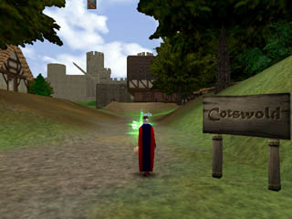

Where before I had sped to Prydwen Keep at urging of my father's mission, I knew now that I had no hope of following my brother Ahmid into the North until I learned more of my craft. I would not leave Father with no children to honor his memory. I followed the stone marker to Cotswold,  a small but prosperous village outside Camelot's west gate.
As I sang my songs for the peaceful people of the village, a sister minstrel beckoned me to her. I bowed to my audience and met with her next to the inn where she lived. We talked of song for awhile, but I could not help but admire her cloak of the most lustrous black.
She told me of her daring trip to a bandit encampment and the skillful use of song that won her that cloak. She said though that I could get one more easily if I talked to the seamstress at Prydwen Keep. So I was to go to Prydwen after all!
The seamstress in Prydwen was willing to make such a cloak for me as a test of her skill, but she was out of certain materials she felt were necessary to instill in it the magical qualities of which I'd heard. She would need a pristine pelt from one of the monstrous boars which prowl the plains of Salisbury, the home of ancient stone rings of power, and the synew from the brownies that lived in a distant forest. I did not look forward to such a trip, but the thrill of exploration pulled at me, and so I set off for Salisbury.